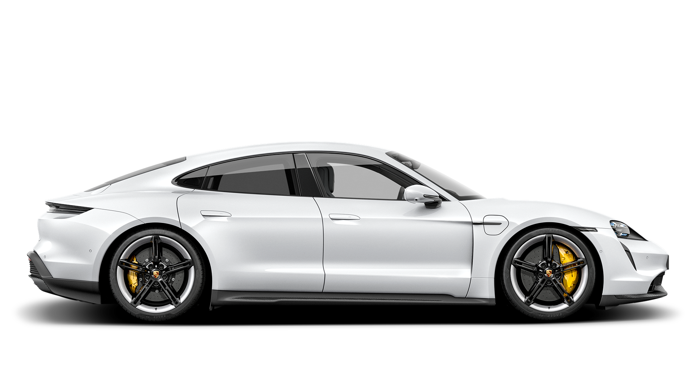

718
Porsche 718 Boxster / Cayman

911
Porsche 911


Choose a model series.
Porsche 718 Boxster / Cayman
Porsche 911
Porsche Taycan
Porsche Panamera

Porsche Macan

Porsche Cayenne
New and Avalaible. Find your Porsche Car ar a Porsche Dealer near you. Choose from a large selection of available new cars.
New and Avalaible. Find your Porsche Car ar a Porsche Dealer near you. Choose from a large selection of available new cars.
New and Avalaible. Find your Porsche Car ar a Porsche Dealer near you. Choose from a large selection of available new cars.
Porsche Finder is the official search platform to find a new or used car of our authorized Porsche. You can browse current car offers and view the latest inventory available from your local Porsche Dealer. You can search by any model whether it is the timeless 911 or the electrified Taycan. You can refine your search by optional equipment, color, and price.
You can find your ideal Porsche whether you are interested in new or used Porsche cars. And for extra confidence in finding the perfect used car, search for Certified Pre-Owned Porsche (Porsche Approved), which gets the Porsche approval by going through a rigorous 111-point inspection and comes with 24 months car warranty (US Only) and Roadside Assistance, providing you greater confidence and guaranteed quality.
You can also find other convenient tools such as trade-in estimators, financial calculations, apply for credit or reserve your next Porsche through the platform.
We look forward to helping you find your next Porsche!
In Porsche Finder, you can find everything from our current cars, such as the Taycan Turbo S to a Porsche Classic 356, and anything in between. The filter options give you a choice to refine your search between Porsche new cars, used cars, and Certified Pre-Owned (Porsche Approved) used cars, and so much more!
The following new and used cars are particularly popular:
A Porsche is as individual as its owner. It is always also an expression of one's own personality. To make it easier for you to find your Porsche, numerous search and filter options are available. Select your desired model, color and equipment. Among our equipment options, the Porsche Chrono Package, the panoramic roof, the adaptive control cruise control and the sports exhaust system are particularly popular. With over 90 equipment criteria, you can quickly find the car that's fits to you.
Very dissatisfied
Very satisfied
© 2023 Porsche Sales & Marketplace, Inc. Imprint and Legal Notice. Terms and Conditions. Privacy Notice. California Privacy. Do Not Sell or Share My Personal Information. Open Source Software Notice. Business & Human Rights.
Accessibility Statement If you experience any difficulty in accessing any part of this website, please feel free to contact us at 1-800-PORSCHE or accessibility@porsche.us. Porsche is committed to making its websites usable by all people by meeting or exceeding the requirements of the Web Content Accessibility Guidelines 2.0 Level AA (the Guidelines). We continually assess and work to ensure that our Web presence is in conformance with the Guidelines. Please be aware that our efforts are ongoing as our current website provider implements the relevant improvements to meet the Guidelines over time. If you experience any difficulty in accessing any part of this website, please feel free to contact us at 1-800-PORSCHE or accessibility@porsche.us. Please be sure to specify the Web page and describe the issue in detail and we will make reasonable efforts to make that page accessible. We welcome feedback on how we can improve as well.